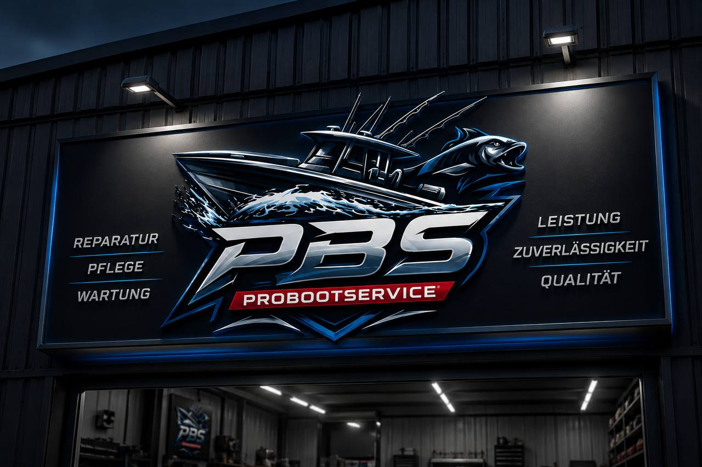
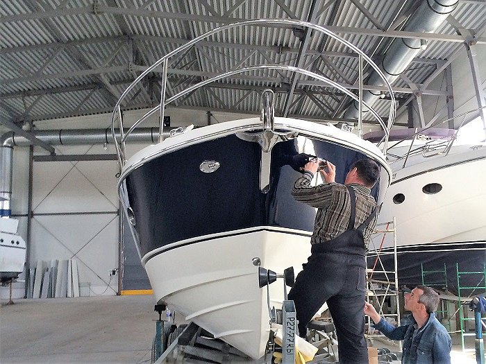
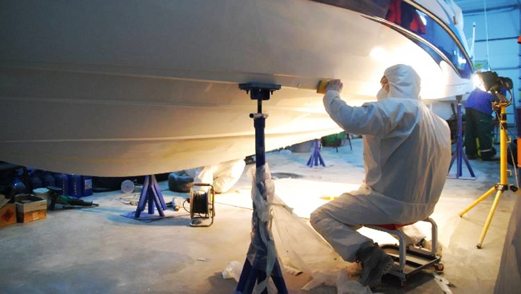
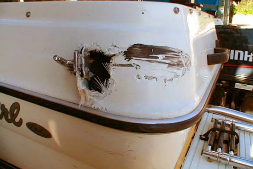

Individuelle Lösungen für Marine-Technik, professionelle Umbauten und Premium-Service.
PBS ProBootService steht für hochwertige Arbeiten im Bereich Bootsservice, technische Umbauten und individuelle Marine-Lösungen.
Unser Fokus liegt auf präziser Ausführung, moderner Technik und kompromissloser Qualität für moderne Bootsprojekte.
Mehr entdeckenProfessionelle Instandsetzung technischer und mechanischer Komponenten für maximale Zuverlässigkeit auf dem Wasser.
Individuelle Anpassungen und maßgeschneiderte Lösungen für Optik, Funktionalität und Performance Ihres Bootes.
Montage und Integration moderner Marine-Systeme, Elektronik, Beleuchtung und zusätzlicher Ausstattung.
Sichere Einlagerung und professionelle Vorbereitung Ihres Bootes für die Wintersaison inklusive technischer Kontrolle und Konservierung.
Hochwertige Umsetzung aller Arbeiten mit maximaler Genauigkeit.
Einsatz moderner Marine-Systeme und professioneller Lösungen.
Maßgeschneiderte Konzepte für jedes Boot und jedes Projekt.
Verwendung langlebiger und professioneller Komponenten.
Verlässliche Betreuung und professionelle Kommunikation.
Fokus auf Design, Qualität und perfekte Endergebnisse.
Entdecken Sie unsere Arbeiten im Bereich Reparatur, Custom-Umbauten und professioneller Marine-Technik.


